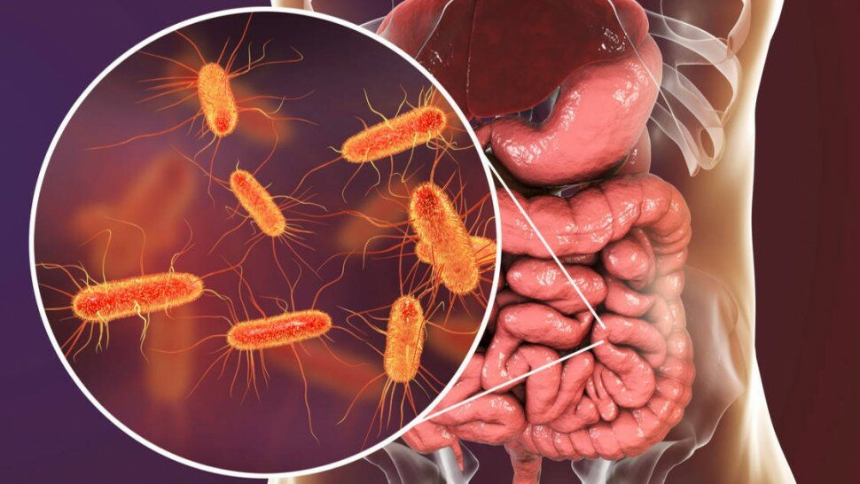

Gastro-entérite virale hivernale : causes, symptômes, traitements


Sommaire
- Gastro-entérite : cause de morbidité et de mortalité dans le monde
- Inflammation du tractus gastro-intestinal à facteurs multiples
- Des risques de contagion virale ou bactérienne ?
- Gastro-entérite : une épidémie mondiale ?
- Virus type du genre Norovirus de la famille Caliciviridae et de SRSVs
- Symptômes de la gastro-entérite : comment débute la gastro ?
- Comment savoir si l'on a la gastro ?
- Confusion entre diarrhée virale et diarrhée bactérienne
- Période d’incubation d’une gastro-entérite
- Comment traiter soi-même la diarrhée et les vomissements ?
- Quels aliments manger pendant une gastro-entérite ?
- Comment soigner une gastro-entérite ?
- Traitement et médicament contre la gastro-entérite
- Gastro-entérite chez la femme enceinte
- Sources
Des risques de contagion virale ou bactérienne ?
Gastro-entérite : une épidémie mondiale ?
Symptômes de la gastro-entérite : comment débute la gastro ?

Selon la cause, les symptômes de la gastro-entérite virale peuvent apparaître dans les un à trois jours suivant l'infection et peuvent aller de légers à graves. La durée des symptômes est généralement d’environ 1 à 2 jour.
Soulignons que la déshydratation chez l’enfant est un point vital à surveiller. Cependant, la durée des symptômes peut parfois persister. La disparition des symptômes peut durer jusqu'à 10 jours et peut nécessiter une consultation auprès d’un médecin généraliste ou un médecin gastro-entérologue.
Selon la durée des symptômes et parce que les symptômes sont similaires, lors d’un diagnostic il est facile de confondre la diarrhée virale avec la diarrhée causée par des bactéries, telles que :
- Clostridium difficile [14] : Clostridium difficile, également connu sous le nom de Clostridioides difficile et souvent appelé C. difficile ou C. diff, est une bactérie qui peut causer des symptômes allant de la diarrhée à une inflammation potentiellement mortelle du côlon.
- Salmonelle : selon l’OMS [15], « les salmonelles (Salmonella) sont l’une des 4 causes principales de maladies diarrhéiques dans le monde ».
- E. coli [16] : « Escherichia coli est une bactérie courante dans l’intestin humain et celui des autres animaux à sang chaud. On relève parmi les symptômes des crampes abdominales et de la diarrhée, parfois sanglante. Il peut y avoir également de la fièvre et des vomissements. La plupart des patients guérissent en 10 jours mais, dans certains cas, la maladie peut engager le pronostic vital ».
- Parasites : des parasites tels que l'infection à Giardia (gardiasis). Le parasite Giardia (parasite intestinal), aussi appelée giardiose, giardiase ou lambliase, est un parasite responsable d’une infection intestinale caractérisée par des crampes abdominales, des ballonnements, des nausées et des épisodes de diarrhée aqueuse. L'infection à Giardia est causée par un parasite microscopique que l'on trouve dans le monde entier, en particulier dans les zones avec un assainissement médiocre et une eau insalubre.
D’autre part, il existe aussi d'autres troubles digestifs comme la « diarrhée du voyageur » [17], un trouble sanitaire très fréquent chez les voyageurs.
La diarrhée du voyageur, appelée aussi tourista ou turista, est une gastro-entérite aiguë qui se manifeste par une diarrhée associée à des symptômes tels que fatigue, des douleurs et des crampes abdominales.
Sources
- Système digestif : Lorsque les intestins se déchirent. Science. Inserm. 2019. https://www.inserm.fr/actualites-et-evenements/actualites/systeme-digestif-lorsque-intestins-dechirent
- Maladie de Crohn (maladie chronique) : symptômes, diagnostic et évolution. Assurance Maladie. 2020. https://www.ameli.fr/assure/sante/themes/maladie-crohn/symptomes-diagnostic-evolution
- La rectocolite hémorragique. Société Nationale Française de Colo-Proctologie (SNFCP). https://www.snfcp.org/informations-maladies/maladie-de-crohn-rch/la-rectocolite-hemorragique/ - Maladie de Crohn (Iléite granulomateuse ; iléo-colite granulomateuse ; entérite régionale). Par Aaron E. Walfish , MD, Mount Sinai Medical Center. Rafael Antonio Ching Companioni , MD, Digestive Diseases Center. 2019. https://www.msdmanuals.com/fr/accueil/troubles-digestifs/maladies-inflammatoires-chroniques-de-l-intestin-mici/maladie-de-crohn
- Hunter's Tropical Medicine and Emerging Infectious Disease. 2020. https://www.sciencedirect.com/book/9781416043904/hunters-tropical-medicine-and-emerging-infectious-disease
- Epidémiologie des Gastroentérites Virales en France et en Europe, HAL-Inserm, https://www.hal.inserm.fr/docs/00/80/46/79/DOC/Flahault_GastroEnteritesVirales_9nov2010final.doc
- Virus de Norwalk. Descripteur MeSH. CHU de Rouen, http://www.chu-rouen.fr/page/virus-de-norwalk
- Murphy AM, Grohmann GS, Christopher PJ, Lopez WA, Davey GR, Millsom RH. An Australia-wide outbreak of gastroenteritis from oysters caused by Norwalk virus. Med J Aust. 1979 Oct 6;2(7):329-33. PMID: 514174. https://pubmed.ncbi.nlm.nih.gov/514174/
- Kawamoto H, Hasegawa S, Sawatari S, Miwa C, Morita O, Hosokawa T, Tanaka H. Small, round-structured viruses (SRSVs) associated with acute gastroenteritis outbreaks in Gifu, Japan. Microbiol Immunol. 1993;37(12):991-7. doi: 10.1111/j.1348-0421.1993.tb01736.x. PMID: 8133807. https://pubmed.ncbi.nlm.nih.gov/8133807/
- Flambées épidémiques. Thèmes de santé. OMS. https://www.who.int/topics/disease_outbreaks/fr/
- Prise en charge du 1er épisode de bronchiolite aiguë chez le nourrisson de moins de 12 mois. Recommandation de bonne pratique. HAS (Haute Autorité de Santé). 2019. https://www.has-sante.fr/jcms/p_3118113/fr/prise-en-charge-du-1er-episode-de-bronchiolite-aigue-chez-le-nourrisson-de-moins-de-12-mois
- Grippe saisonnière : information des professionnels de santé. Ministère des Solidarités et de la Santé. 2020. https://solidarites-sante.gouv.fr/soins-et-maladies/maladies/maladies-infectieuses/article/grippe-saisonniere-information-des-professionnels-de-sante
- Rubrique Santé Publique. Le Guide Santé. https://www.le-guide-sante.org/actualites/sante-publique
- Migraine et gastro-entérologie. Association Française de Formation Médicale Continue en Hépato-Gastro-Entérologie, https://www.fmcgastro.org/postu-main/archives/postu-2004-paris/migraine-et-gastro-enterologie/
- Colite à Clostridioides difficile (auparavant à Clostridium). (Colite associée aux antibiotiques ; Colite pseudomembraneuse ; Diarrhée à Clostridioides difficile ; C. diff). Par Larry M. Bush , MD, FACP, Charles E. Schmidt College of Medicine, Florida Atlantic University. 2019. https://www.msdmanuals.com/fr/accueil/infections/infections-bact%C3%A9riennes-bact%C3%A9ries-ana%C3%A9robies/colite-%C3%A0-clostridioides-difficile-auparavant-%C3%A0-clostridium
- Infections à Salmonella (non typhiques). OMS. 2018. https://www.who.int/fr/news-room/fact-sheets/detail/salmonella-(non-typhoidal)
- Infections à Escherichia coli. Thèmes de santé. OMS. https://www.who.int/topics/escherichia_coli_infections/fr/
- Diarrhées du voyageur (DV). Diarrhée aiguë. Infectiologie. Quelle prévention ? Quels traitements ? https://www.infectiologie.com/UserFiles/File/medias/enseignement/seminaires_desc/2014/janvier/DESC-MIT-janv2014-Marchou-diarrhae-voyageur.pdf
- Conduite à tenir devant des myalgies. Doi : 10.1016/j.praneu.2018.01.008. EM Consult. 2018. https://www.em-consulte.com/article/1198946/conduite-a-tenir-devant-des-myalgies
- Améliorer la composition des sels de réhydratation orale pour sauver des vies d’enfants. OMS. 2006. https://www.who.int/mediacentre/news/releases/2006/pr14/fr/
- Que manger en cas de gastro-entérite ? https://www.le-guide-sante.org/actualites/nutrition/gastro-enterite-que-manger
- Médecine douce : le guide des médecines douces. https://www.le-guide-sante.org/actualite/616-medecine-douce-le-guide-des-medecines-douces.html
- Café : bienfaits et méfaits sur la santé. https://www.le-guide-sante.org/actualite/617-cafe-bienfaits-et-mefaits-sur-la-sante.html
- Imodium. 2 mg, gélule - Notice patient. http://base-donnees-publique.medicaments.gouv.fr/affichageDoc.php?specid=61651634&typedoc=N
- Sous-salicylate de bismuth, https://fr.wikipedia.org/wiki/Sous-salicylate_de_bismuth